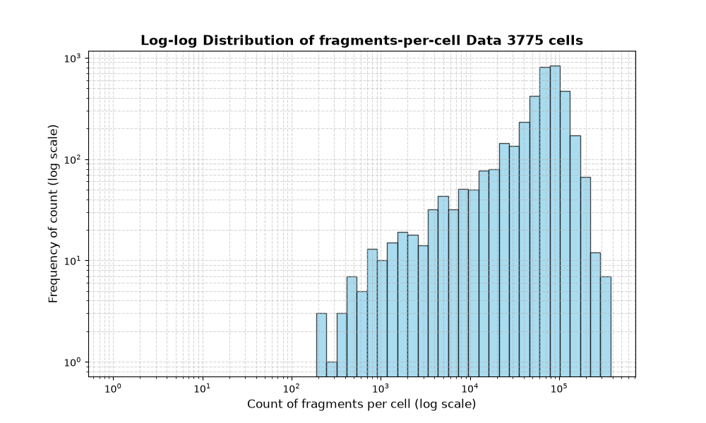
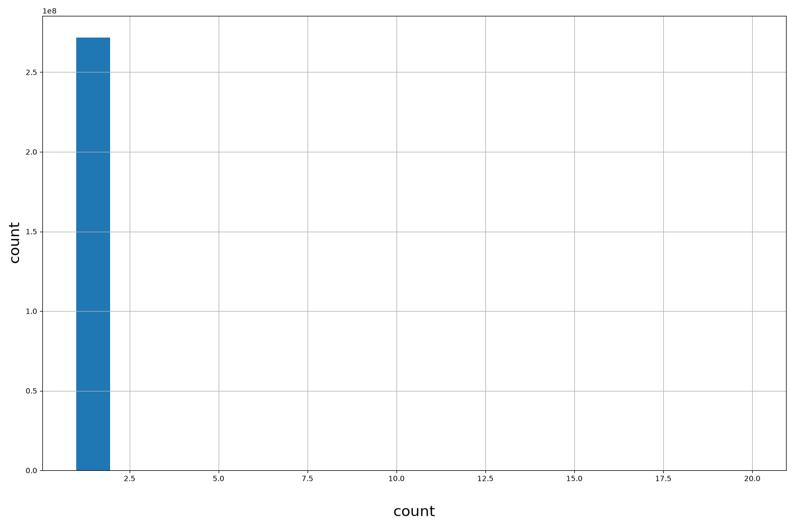
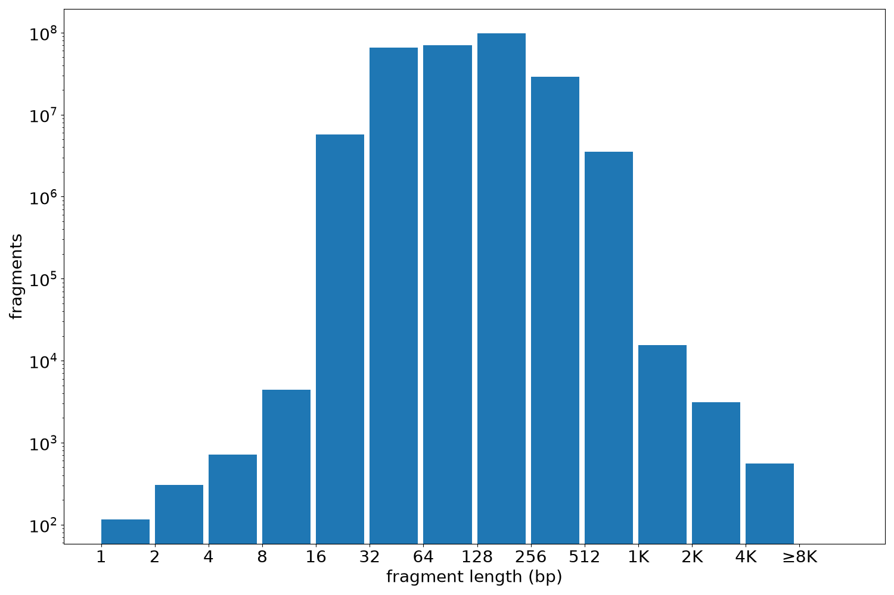

Resource
| Id | summary/johansen2025Crossspecies/atac_fragments/marmoset/P0066_2 |
|---|---|
| Type | fragment_score |
| Version | 0 |
| Summary | ATAC fragments for marmoset from library P0066_2 |
| Description | |
| Labels |
|
Scores (2)
| ID | Type | Default annotation | Description | Histogram | Range | Summary |
|---|---|---|---|---|---|---|
| cell | str |
cell |
 |
GACCGTTCACTAAGAA-P0066_2, AAGTCTATCGATTTGA-P0066_2, GGCGGTTTCAACAAGG-P0066_2, TTAATCGAGGTAAGGC-P0066_2, CAATCGCCACACTAAT-P0066_2 (top 5 of 3775 values) | ||
| count | int |
count |
 |
[1, 1] |
|
n counts fragments; sd is the population standard deviation.
Fragments
| Chromosome | Fragments |
|---|---|
| all chromosomes | 271861525 |
| chr1 | 21500788 |
| chr2 | 18423164 |
| chr3 | 13459083 |
| chr4 | 14911489 |
| chr5 | 21611526 |
| chr6 | 14364878 |
| chr7 | 17528196 |
| chr8 | 10774842 |
| chr9 | 13478612 |
| chr10 | 14317639 |
| chr11 | 14243248 |
| chr12 | 13989961 |
| chr13 | 10689106 |
| chr14 | 10435650 |
| chr15 | 10639516 |
| chr16 | 8512449 |
| chr17 | 6238962 |
| chr18 | 5175624 |
| chr19 | 5690992 |
| chr20 | 5174385 |
| chr21 | 4094038 |
| chr22 | 9620572 |
| chrUn_NW_026528016v1 | 36 |
| chrUn_NW_026528017v1 | 99 |
| chrUn_NW_026528021v1 | 1011 |
| chrUn_NW_026528026v1 | 928 |
| chrUn_NW_026528029v1 | 860 |
| chrUn_NW_026528038v1 | 833 |
| chrUn_NW_026528039v1 | 1024 |
| chrUn_NW_026528065v1 | 329 |
| chrUn_NW_026528075v1 | 221 |
| chrUn_NW_026528103v1 | 61 |
| chrUn_NW_026528123v1 | 4 |
| chrUn_NW_026528125v1 | 100 |
| chrUn_NW_026528140v1 | 786 |
| chrUn_NW_026528210v1 | 222 |
| chrUn_NW_026528215v1 | 272 |
| chrUn_NW_026528217v1 | 1 |
| chrUn_NW_026528218v1 | 12 |
| chrUn_NW_026528219v1 | 13 |
| chrUn_NW_026528220v1 | 2 |
| chrUn_NW_026528221v1 | 1 |
| chrUn_NW_026528222v1 | 11 |
| chrUn_NW_026528224v1 | 15 |
| chrUn_NW_026528225v1 | 83 |
| chrUn_NW_026528226v1 | 138 |
| chrUn_NW_026528228v1 | 304 |
| chrUn_NW_026528230v1 | 391 |
| chrUn_NW_026528232v1 | 2346 |
| chrUn_NW_026528259v1 | 12 |
| chrUn_NW_026528278v1 | 923 |
| chrUn_NW_026528285v1 | 72 |
| chrUn_NW_026528292v1 | 39 |
| chrUn_NW_026528295v1 | 353 |
| chrUn_NW_026528296v1 | 16219 |
| chrUn_NW_026528310v1 | 174 |
| chrUn_NW_026528320v1 | 37 |
| chrUn_NW_026528327v1 | 16 |
| chrUn_NW_026528332v1 | 22 |
| chrUn_NW_026528335v1 | 15 |
| chrUn_NW_026528338v1 | 50 |
| chrUn_NW_026528339v1 | 56 |
| chrUn_NW_026528345v1 | 39 |
| chrUn_NW_026528347v1 | 5 |
| chrUn_NW_026528350v1 | 32 |
| chrUn_NW_026528353v1 | 36 |
| chrUn_NW_026528356v1 | 27 |
| chrUn_NW_026528358v1 | 5 |
| chrUn_NW_026528360v1 | 4 |
| chrUn_NW_026528363v1 | 268 |
| chrUn_NW_026528370v1 | 195 |
| chrUn_NW_026528371v1 | 1405 |
| chrUn_NW_026528372v1 | 460 |
| chrUn_NW_026528373v1 | 1330 |
| chrUn_NW_026528378v1 | 8 |
| chrUn_NW_026528380v1 | 7 |
| chrUn_NW_026528381v1 | 2 |
| chrUn_NW_026528382v1 | 4 |
| chrUn_NW_026528384v1 | 31 |
| chrUn_NW_026528385v1 | 74 |
| chrUn_NW_026528390v1 | 34 |
| chrUn_NW_026528393v1 | 18 |
| chrUn_NW_026528396v1 | 7 |
| chrUn_NW_026528397v1 | 30 |
| chrUn_NW_026528402v1 | 5 |
| chrUn_NW_026528403v1 | 12 |
| chrUn_NW_026528404v1 | 1 |
| chrUn_NW_026528408v1 | 12 |
| chrUn_NW_026528409v1 | 19 |
| chrUn_NW_026528412v1 | 19 |
| chrUn_NW_026528413v1 | 5 |
| chrUn_NW_026528416v1 | 12 |
| chrUn_NW_026528419v1 | 3 |
| chrUn_NW_026528420v1 | 4 |
| chrUn_NW_026528423v1 | 110 |
| chrUn_NW_026528431v1 | 449 |
| chrUn_NW_026528432v1 | 693 |
| chrUn_NW_026528433v1 | 5330 |
| chrUn_NW_026528440v1 | 7 |
| chrUn_NW_026528471v1 | 1 |
| chrUn_NW_026528480v1 | 688 |
| chrUn_NW_026528558v1 | 2002 |
| chrUn_NW_026528559v1 | 69 |
| chrUn_NW_026528561v1 | 5 |
| chrUn_NW_026528588v1 | 16 |
| chrUn_NW_026528589v1 | 19 |
| chrUn_NW_026528590v1 | 1605 |
| chrUn_NW_026528596v1 | 3287 |
| chrUn_NW_026528609v1 | 36 |
| chrUn_NW_026528611v1 | 17 |
| chrUn_NW_026528615v1 | 20 |
| chrUn_NW_026528621v1 | 452 |
| chrUn_NW_026528631v1 | 174 |
| chrUn_NW_026528634v1 | 348 |
| chrUn_NW_026528635v1 | 17 |
| chrUn_NW_026528644v1 | 4 |
| chrUn_NW_026528650v1 | 26 |
| chrUn_NW_026528656v1 | 1 |
| chrUn_NW_026528660v1 | 2 |
| chrUn_NW_026528661v1 | 38 |
| chrUn_NW_026528668v1 | 32 |
| chrUn_NW_026528670v1 | 2 |
| chrUn_NW_026528677v1 | 26 |
| chrUn_NW_026528708v1 | 17 |
| chrUn_NW_026528719v1 | 826 |
| chrUn_NW_026528737v1 | 47 |
| chrUn_NW_026528739v1 | 3 |
| chrUn_NW_026528741v1 | 3 |
| chrUn_NW_026528745v1 | 11 |
| chrUn_NW_026528748v1 | 3 |
| chrUn_NW_026528749v1 | 1 |
| chrUn_NW_026528750v1 | 28 |
| chrUn_NW_026528751v1 | 1 |
| chrUn_NW_026528754v1 | 9 |
| chrUn_NW_026528755v1 | 146 |
| chrUn_NW_026528772v1 | 25 |
| chrUn_NW_026528775v1 | 19 |
| chrUn_NW_026528777v1 | 10 |
| chrUn_NW_026528784v1 | 16 |
| chrUn_NW_026528785v1 | 12 |
| chrUn_NW_026528786v1 | 18 |
| chrUn_NW_026528788v1 | 11 |
| chrUn_NW_026528791v1 | 3 |
| chrUn_NW_026528792v1 | 2 |
| chrUn_NW_026528793v1 | 225 |
| chrUn_NW_026528795v1 | 156 |
| chrUn_NW_026528796v1 | 472 |
| chrUn_NW_026528797v1 | 5882 |
| chrUn_NW_026528798v1 | 1359 |
| chrUn_NW_026528799v1 | 307 |
| chrUn_NW_026528880v1 | 35 |
| chrUn_NW_026528882v1 | 15 |
| chrUn_NW_026528883v1 | 4 |
| chrUn_NW_026528884v1 | 23 |
| chrUn_NW_026528885v1 | 4 |
| chrUn_NW_026528887v1 | 86 |
| chrUn_NW_026528888v1 | 26 |
| chrUn_NW_026528889v1 | 17 |
| chrUn_NW_026528891v1 | 98 |
| chrUn_NW_026528893v1 | 17 |
| chrUn_NW_026528894v1 | 674 |
| chrUn_NW_026528896v1 | 5 |
| chrUn_NW_026528899v1 | 27 |
| chrUn_NW_026528900v1 | 189 |
| chrUn_NW_026528902v1 | 206 |
| chrUn_NW_026528903v1 | 1840 |
| chrUn_NW_026528917v1 | 381 |
| chrUn_NW_026528926v1 | 130 |
| chrUn_NW_026528928v1 | 1239 |
| chrUn_NW_026528937v1 | 63 |
| chrUn_NW_026528938v1 | 8 |
| chrUn_NW_026528950v1 | 16 |
| chrUn_NW_026528952v1 | 8 |
| chrUn_NW_026528957v1 | 1021 |
| chrUn_NW_026528960v1 | 395 |
| chrUn_NW_026528975v1 | 241 |
| chrUn_NW_026528984v1 | 92 |
| chrUn_NW_026528985v1 | 11 |
| chrUn_NW_026528986v1 | 5 |
| chrUn_NW_026528987v1 | 15 |
| chrUn_NW_026528988v1 | 204 |
| chrUn_NW_026528989v1 | 32 |
| chrUn_NW_026528990v1 | 1 |
| chrUn_NW_026528992v1 | 4 |
| chrUn_NW_026528994v1 | 1 |
| chrUn_NW_026528995v1 | 2 |
| chrUn_NW_026528996v1 | 61 |
| chrUn_NW_026529007v1 | 640 |
| chrUn_NW_026529008v1 | 6400 |
| chrUn_NW_026529013v1 | 95 |
| chrUn_NW_026529015v1 | 181 |
| chrUn_NW_026529016v1 | 1307 |
| chrUn_NW_026529060v1 | 2317 |
| chrUn_NW_026529081v1 | 348 |
| chrUn_NW_026529085v1 | 903 |
| chrX | 6843706 |
| chrX_NW_026527892v1_random | 784 |
| chrX_NW_026527894v1_random | 1263 |
| chrX_NW_026527897v1_random | 308 |
| chrY | 34910 |
| chrY_NW_026527911v1_random | 39 |
| chrY_NW_026527913v1_random | 92 |
| chrY_NW_026527914v1_random | 994 |
| chrY_NW_026527915v1_random | 2 |
| chrY_NW_026527916v1_random | 1 |
| chrY_NW_026527919v1_random | 32 |
| chrY_NW_026527927v1_random | 7 |
| chrY_NW_026527932v1_random | 17 |
| chrY_NW_026527938v1_random | 755 |
| chrY_NW_026527939v1_random | 43 |
| chrY_NW_026527942v1_random | 6 |
| chrY_NW_026527948v1_random | 1 |
| chrY_NW_026527949v1_random | 3346 |
| chrY_NW_026527950v1_random | 1554 |
| chrY_NW_026527951v1_random | 153 |
| chrY_NW_026527955v1_random | 104 |
| chrY_NW_026527956v1_random | 3313 |
| chrY_NW_026527958v1_random | 1452 |
| chrY_NW_026527960v1_random | 121 |
| chrY_NW_026527961v1_random | 330 |
| chrY_NW_026527966v1_random | 13879 |
| chrY_NW_026527967v1_random | 440 |
| chrY_NW_026527968v1_random | 2350 |
| chrY_NW_026527969v1_random | 17 |
| chrY_NW_026527980v1_random | 107 |
Fragment lengths
| fragments | min | max | mean | median | |
|---|---|---|---|---|---|
| fragments | 271861525 | 1 | 5036 | 144.27 | 119 |

Files
| Filename | Size | md5 |
|---|---|---|
| P0066_2.gz | 2.52 GB | 4a55b5b1196d8d56c614ef726cc231b5 |
| P0066_2.gz.tbi | 1.14 MB | 7e508b95ff207cbd16c4463432c96620 |
| fragment_count_dist_plot.py | 853.0 B | 9d735ee8c687286d50484e7f1e398e60 |
| genomic_resource.yaml | 1.38 KB | a7dd53975e45e5f958c6a2831d43448e |
| statistics/ |